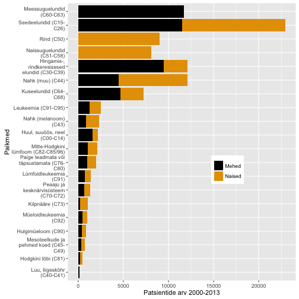

Onkobioloogia
Vähkkasvajate molekulaarsed mehhanismid
Taavi Päll
lektor, Tallinna Tehnikaülikool
Sissejuhatus
Vähk
- Mõiste vähk (tuumor, pahaloomuline kasvaja, neoplasm) tähistab suurt hulka erinevaid haiguseid (NCI ~160 olulisemat) mis võivad tekkida kõigis keha kudedes.
- Vähi tunnuseks on ebanormaalsete rakkude kasv koes väljapoole nende normaalseid piire. Kõrvalolevate kudede invasioon ja levik teistesse organitesse ehk metastaseerumine.
- Metastaasid on ka enamuse kasvajatest tingitud surmade põhjustajaks.
Vähk võib lõppeda surmaga
- Vähkkasvajad on maailmas üks juhtivatest surma põhjustatavatest haigustest, nõudes 8.2 miljonit elu 2012. a (EU-27 osakaal 2012: 1.27 miljonit (15%))
- Kopsu-, maksa-, mao-, kolorektaal- ja rinnakasvajad põhjustavad enim vähisurmasid
- sagedasemad vähitüübid on naistel ja meestel erinevad
- ennustatakse, et haigestumus suureneb maailmas 14 miljonilt 2012.a 22 miljonini 2030-ndatel
Kõige sagedasemad surmaga lõppevad vähipaikmed maailmas, 2012 aasta seis:
- 5. kopsuvähk (1.59M)
- maksavähk (0.75M)
- maovähk (0.72M)
- soolevähk (0.69M)
- rinnavähk (0.52M)
- söögitoru vähk (0.4M)
Võrdluseks:
- 1. südame isheemia (7.4M)
- 2. insult (6.7M)
- 3-4. krooniline obstruktiivne kopsuhaigus ja alumiste hingamisteede infektsioonid (a 3.1M)
Kursuse eesmärk
- Selgitada vähkkasvajate tekke molekulaarseid ja rakulisi mehhanisme
Raamat
- Robert A. Weinberg
The Biology of Cancer
New York, Garland Science, 2007
Kohaviit: 616/W-46
Ajaloost
Egiptus, 16-17. dünastia
- Vanim teadaolev kirjeldus vähist pärineb 1500 BC Egiptusest.
- Papüürus kirjeldab muuseas ka 8 rinnavähi juhtu mida raviti põletusega.
- Kirjutises konstanteeritakse et see haigus on ravimatu.

Kasvajad kui tulnukad
- Hippokrates: vähi "kehavedelike tasakaalu häire teooria" (must-, kollane sapp, veri ja flegma)
- vähke ajalooliselt käsitletud ka kui võõrkeha, mis on ennast haige kehas sisse seadnud.

Kasvajad on koelise struktuuriga
- 1655. avastas Robert Hooke mikroskoopi kasutades, et taimekude koosneb rakkudest.
- Seoses mikroskoopia arenguga 19. saj. saadi aru,
- kasvajad koosnevad rakkudest
- pärinevad normaalsetest kudedest
Vähki põhjustavad kartsinogeenid
- 1775. a. identifitseeris kirurg sir Percivall Pott korstnapühkijatel nõe ja munandikasvajate vahelise seose - keskkonnas leiduvad kartsinogeenid võivad põhjustada vähki.

Tänapäev
Vähiriski mõjutab elustiil
- ~30% vähisurmadest on tingitud viiest käitumis ja dieediriskist:
- kõrge kehamassiindeks,
- vähe puu- ja aedvilju menüüs,
- vähene füüsiline aktiivsus,
- tubakas/suitsetamine,
alkohol
arengumaades põhjustavad 20% vähkidest hepatiidi viirused B ja C ning papilloomiviirused
Ülekaalulisus ja vähk
- Ülekaalulisus ja rasvumine on maailmas kasvav probleem.
- Ülekaalulisus ja rasvumine suurendab vähiriski mitmete vähitüüpide puhul: rinna-, soole-, neeru-, endomeetriumi-, söögitoru- ja pankrease vähk.
- Vähiteraapias on ülekaalulisus ja rasvumine seotud suurenenud vähi tagasi tuleku ja surma riskiga.
- Füüsiline aktiivsus ja tervislik toit vähendavad riski oluliselt.
Kuidas siis ülekaalulisus on vähiga seotud?
- Immuunsüsteemi tervis/funktsioneerimine, põletik
- Teatud hormoonide tase organismis, nagu insulin ja östrogeen
- Rakkude jagunemist reguleerivad kasvufaktorid -- insulin-like growth factor-1 (IGF-1)
- Valgud mis mõjutavad hormoonide toimet organismile, nagu sex hormone-binding globulin
Suitsetamise tõus arengumaades
- Üle 1.3 miljardi inimese suitsetab maailmas tubakat. Suitsetamine põhjustab erinevaid kasvajaid ja vastutab 1/5 vähisurmade eest maailmas.
- Lähis-Idas ja Aafrikas on ajavahemikus 1990-2009 sigarettide tarbimine suurenenud 57%.
- Kuigi keskeas suitsetamise maha jätmine vähendab üle 60% kopsuvähi riski, teevad arengumaades seda vähesed.
- Sigarettide maksustamises nähakse vastumeedet, kuid sissetulekud tõusevad kiiremini kui maksud.

Kasvajatesse haigestumus Eestis
Andmed: TAI vähiregister
Kasvajad Eestis paikmete kaupa
Andmed: TAI vähiregister
Sagedasemad paikmed

Esmased vähid ja 5 aasta suremus
Sõltuvalt vähitüübist võib elulemus varieeruda 10% kuni 90%
Vähitüübid
Kliiniline klassifikatsioon
Kliiniliselt võib kasvajad jaotada kaheks
- healoomulised (lokaliseerunud, mitteinvasiivsed)
- pahaloomulised (invasiivsed, metastaatilised)
Metastaasid ehk vähi siirded vastutavad lõviosa kasvajatest tingitud surmade eest!
- TNM-klassifikatsioon

Neli põhilist vähitüüpi
| Epiteliaalsed | Mitte-epiteliaalsed |
|---|---|
| kartsinoomid (carcinoma) | sarkoomid (sarcoma) |
| hematopoieetilised | |
| neuroektodermaaltuumorid |
Epiteel
Kehaosi väljast ja õõsi seest kattev rakukiht (katteepiteel) või näärmeid moodustav rakukogum (näärmeepiteel).


Basaalmembraan

BM (basement membrane) on epiteeli all asuv rakuvälise maatriksi kiht
- peamiseks funktsiooniks on epiteeli ankurdamine all olevale sidekoele (strooma)
- mehhaaniline barjäär
Kartsinoomid
Kartsinoomid on kõige sagedasemad epiteliaalset päritolu kasvajad
- vastutavad 80% vähisurmade eest
Epiteelid pärinevad erinevatest lootelehtedest
- kops, maks, sapipõis, söögitoru, magu ja soolestik pärineb endodermist
- nahk ektodermist
- munasarjad mesodermist
Kartsinoomid jagunevad laias laastus kaheks
- adenokartsinoomid (adenocarcinoma)
- lamerakk-kartsinoomid (squamous-cell carcinoma)
Kartsinoomide sagedasemad paikmed
| Adeno | Lame-rakk | Muud tüüpi |
|---|---|---|
| kops | nahk | väikeserakuline kopsuvähk (neuroendokriinsed rakud) |
| käärsool (colon) | ninaõõs | suurerakuline kopsuvähk |
| rind | neel (oropharynx) | maksakartsinoom |
| kõhunääre (pancreas) | kõri | neerukasvaja |
| magu | kops | transitoorse epiteeli kasvaja (kusepõis) |
| söögitoru | söögitoru | |
| eesnääre | emakakael | |
| emaka sisemine limaskest (endomeetrium) | ||
| munasari |
Mitte-epiteliaalsed kasvajad
- sarkoomid - sidekoekasvajad
- hematopieetilist päritolu kasvajad (valged verelibled)
- leukeemiad - nn. verevähk
- lümfoomid - tahked kasvajad lümfisõlmedes (B- ja T-rakud)
- neuroektodermaaltuumorid
Sarkoomid
- sidekoe kasvajad
- moodustavad ~1% vähkidest
- mesodermaalset päritolu
| Sagedasemad sarkoomid |
|---|
| osteosarkoom |
| liposarkoom |
| leiomüosarkoom |
| rhabdomüosarkoom |
| fibrosarkoom |
| sünooviumi sarkoom |
| angiosarkoom |
| kondrosarkoom |
Hematopoieetilised ja lümfoidsed kasvajad
Tuumorid mis tekivad veres, luuüdis ja lümfisõlmedes
Rakutüübid:
Äge ja krooniline müelogeenne leukeemia, müelodüsplastilised sündroomid ja müeloproliferatiivsed haigused: granulotsüüdid, erütrotsüüdid, trombotsüüdid, makrofaagid ja nuumrakud (mast cells)
Lümfoomid, lümfotsüütsed leukeemiad ja müeloomid: B-, T-, NK- ja plasma rakud
- äge lümfotsüütne leukeemia (ALL) tekib 80% juhtudel B-rakkudest ja 20% T-rakkudest